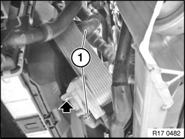
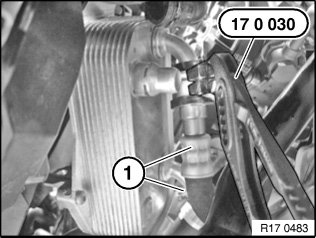

Removal and Replacement
17 22 010 Removing and installing/replacing heat exchanger for automatic transmission (N43, N52, N52K)Special tools required:
Necessary preliminary tasks:
^ Follow instructions for working on cooling system
^ Drain coolant
Recycling
Catch and dispose of drained coolant.
Transmission fluid emerges when oil lines are detached from heat exchanger.
Catch and dispose of escaping transmission fluid.
Observe country-specific waste disposal regulations.

Release and disconnect coolant hoses (1).
Release screw.
Note:
For N43: The front axle subframe is removed for clearer illustration.

Unlock and disconnect hydraulic lines (1) from heat exchanger with special tool 17 0 030.
Important!
After completing work, check oil level in automatic transmission,
Reassemble the vehicle.